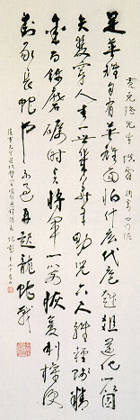

義助慰安婦
—— 李敖百件珍藏義賣藝術品（第16件）
品 名： A16. 莫紀彭寫黃克強詞 預估價： 10 萬 成交價： 13 萬 說 明： 本件作品為老革命黨人「黃花崗之役」隊長之一的莫紀彭先生在七十五歲時所寫的，文中有「隨黃克強先生進攻都署，同任選鋒隊長」等字，更有「黃花崗之役第三隊選鋒隊長」的圖章加以印證。一般人皆知「黃花崗七十二烈士」，但李敖正籌寫《第七十三烈士》小說，將該役中該死而僥倖未死的革命志士寫進，莫紀彭即是此人。莫紀彭十七歲辦雜誌被查禁，二十歲加入同盟會，黃花崗之役與黃克強（即黃興）同為隊長，卻幸運地死裡逃生，未被逮捕；一九七二年死於台灣。莫紀彭晚年主要的生活重心，即是回憶當年拋頭顱、灑熱血的革命事蹟；而面對革命果實被後繼者剽竊的事實，也只能空留回憶、徒呼奈何了。
